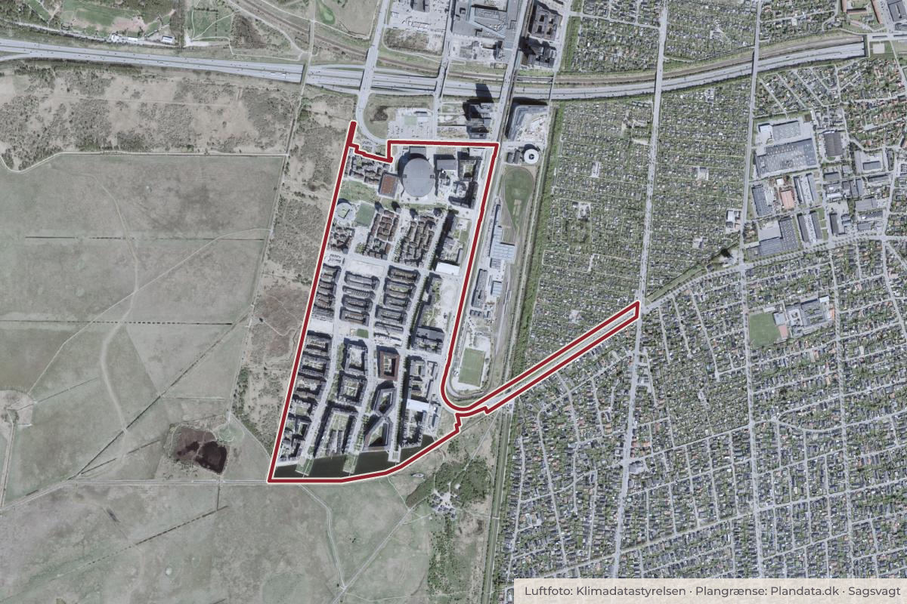

Besluttet 1. juni, Klima-, Miljø- og Teknikudvalget
Forslag til lokalplan Ørestad Syd tillæg 5 med miljørapport og udbygningsaftale, Amager Vest
Trafik og cyklerByggeri og lokalplaner

Kort: © OpenStreetMap-bidragydere. Plangrænse: Plandata.dk, København Kommune.

Kort fortalt
- Hvem
- Klima-, Miljø- og Teknikudvalget
- Hvornår
- Mandag 1. juni 2026
- Status
- Besluttet. Den således ændrede indstilling blev godkendt med 9 stemmer mod 2.Beslutningen er forkortet her. Læs hele beslutningen
9 for2 imod0 undlod
- For
- A SocialdemokratietB Radikale VenstreF SFI Liberal AllianceV VenstreØ EnhedslistenÅ Alternativet
- Imod
- C Det Konservative Folkeparti
Er noget forkert her? Skriv til os
Vedtaget 9–2
- For 9
- Imod 2
- Undlod 0
For
Imod
Afstemninger om ændringsforslag
For
Imod
Undlod
For
Imod
For
Imod
Sagens vej
- 1. juniKlima-, Miljø- og TeknikudvalgetGodkendt
- 9. juniØkonomiudvalgetTaget til efterretning
Læs hele sagen Kommunens egen tekst
Beslutning
Udvalget stillede følgende ændringsforslag (ÆF1) som tilføjelse til 1. at-punkt:
”dog således at følgende forhold justeres:
1) krav skærpes i forhold til publikumsorienterede aktiviteter på det sydlige hovedstrøg (Asger Jorns alle).”
Ændringsforslaget (ÆF1) blev vedtaget uden afstemning.
Alternativet stillede følgende ændringsforslag (ÆF2) som erstatning af 2. at-punkt:
”at der ikke gives tilladelse til opførelse af p-hus og parkering, men udelukkende bebyggelse til beboelse.”
Ændringsforslaget (ÆF2) blev forkastet med 1 stemme mod 7. 3 undlod at stemme.
For stemte: Å
Imod stemte: A, B, C, F, I, V
Undlod at stemme: Ø
Det Konservative Folkeparti stillede følgende ændringsforslag (ÆF3) som nyt at-punkt:
”at forvaltningen retter henvendelse til By og Havn for at sikre bedre muligheder for at der opføres parkeringskælder i forbindelse med boligbyggeriet (byggefelt 1.6).”
Ændringsforslaget (ÆF3) blev forkastet med 4 stemmer mod 7. Ingen undlod at stemme.
For stemte: A, C, V
Imod stemte: B, F, I, Ø, Å
Enhedslisten, Radikale Venstre og Alternativet stillede følgende ændringsforslag (ÆF4) som nyt at-punkt:
”at mulighed for op til 7 % ungdomsboliger i delområde IIIC ændres til et krav om 7% ungdomsboliger.”
Ændringsforslaget (ÆF4) blev vedtaget med 7 stemmer mod 4. Ingen undlod at stemme.
For stemte: A, B, F, Ø, Å
Imod stemte: C, V, I
Den således ændrede indstilling blev godkendt med 9 stemmer mod 2. Ingen undlod at stemme.
For stemte: A, B, F, I, V, Ø, Å
Imod stemte: C
Radikale Venstre, Enhedslisten og Alternativet afgav følgende protokolbemærkning:
”Partierne ser meget gerne et mere aktivt byliv i området, og at alle lokale aktører bidrager til et levende fællesskab. Vi ser frem til en yderligere begrønning af byrummene og håber den nye mulighed for træer i midterrabatten så vidt muligt breder sig til Richard Mortensens Vej, Robert Jacobsens Vej og Else Alfelts Vej. Vi ønsker flest muligt hjemmehørende arter og overvejelser om, hvilke træer der er bedst for klima, bekæmpelse af luftforurening og allergi. Vi ønsker, at hastigheden for biltrafikken sættes ned med hastighedsdæmpende elementer.”
Bilag
- Bilag 1 - Overblik over den politiske behandling
- Bilag 2 - Lokalplanforslag
- Bilag 3 - Udkast til udbygningsaftale Ørestad Syd Tillæg 5 med bilag A-C
- Bilag 4 - Miljørapport
- Bilag 5 Notat om fravigelse af aftale om færdiggørelse af parkering i Ørestad Syd
- Bilag 6 Lokaludvalgets høringssvar
- Bilag 7 Startredegørelse
- Bilag 8 Opsamling på borgermøde i Ørestad Syd
Kilde: Københavns Kommune, Klima-, Miljø- og Teknikudvalget, referat fra mødet mandag 1. juni 2026, punkt 7. Læs den originale sag hos kommunen.
Steder i sagen: Ørestad